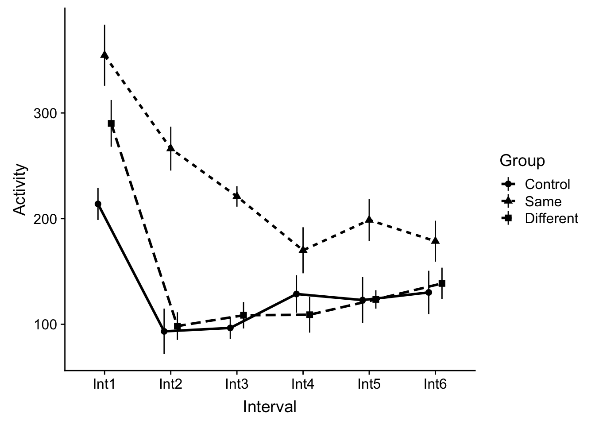
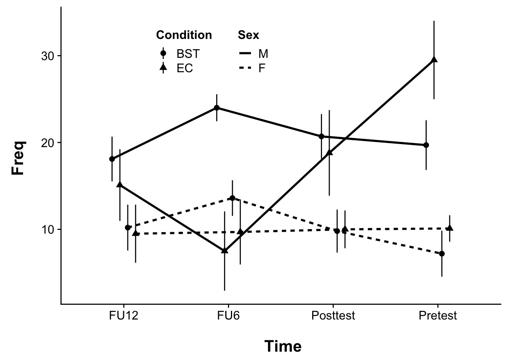
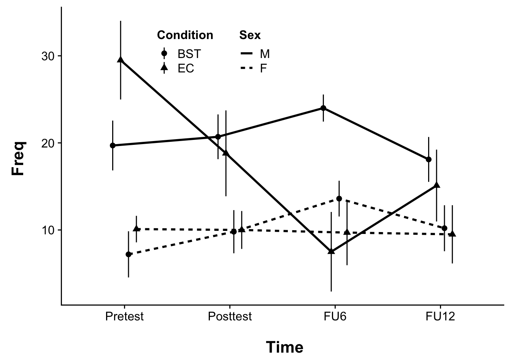

Week 14 ANOVA VI: Mixed-effects ANOVA (BS + WS)
For our final trick, we will be covering mixed effects designs. Mixed models sometimes go by many names (mixed effects model, multi-level model, growth-curve models) depending on the structure of the data that is being analyzed. For this week we will be focusing on Mixed effects ANOVA.
This walk-though assumes the following packages:
pacman::p_load(tidyverse, cowplot, readr, plyr, afex, multcomp, multcompView, Rmisc)In terms of new concepts, we are continuing our theme of “well, nothing terribly new being raised this week”. You’ve done between-subjects (BS) ANOVA, you’ve done within-subjects (WS) ANOVA, you’ve done simple linear regression… now we are simply combining what you know. We will use the two examples from Howell’s text (Chapter 14):
14.1 Example 1:
14.1.1 data import and wrangling
First we import the data, this data and background is presented in Table 14.4 of your Howell text:
example1 <- read_delim("https://www.uvm.edu/~dhowell/methods8/DataFiles/Tab14-4.dat",
delim = "\t")## Parsed with column specification:
## cols(
## Group = col_integer(),
## Int1 = col_integer(),
## Int2 = col_integer(),
## Int3 = col_integer(),
## Int4 = col_integer(),
## Int5 = col_integer(),
## Int6 = col_integer()
## )example1## # A tibble: 24 x 7
## Group Int1 Int2 Int3 Int4 Int5 Int6
## <int> <int> <int> <int> <int> <int> <int>
## 1 1 150 44 71 59 132 74
## 2 1 335 270 156 160 118 230
## 3 1 149 52 91 115 43 154
## 4 1 159 31 127 212 71 224
## 5 1 159 0 35 75 71 34
## 6 1 292 125 184 246 225 170
## 7 1 297 187 66 96 209 74
## 8 1 170 37 42 66 114 81
## 9 2 346 175 177 192 239 140
## 10 2 426 329 236 76 102 232
## # ... with 14 more rowsThe data above is in wide format. I need to get it into long format before submitting it for further analysis. Before doing so, however, I also need to add a SubjectID to let R know which data belongs to which subject. If you are presented with this sort of situation it makes sense to create your SubjectID column BEFORE you gather():
# create subject column
example1$SubjectID <- 1:nrow(example1)
# data is in wide format, needs to be long format for R, notice that I only need
# to collapse the 'Interval' columns (2-7):
example1_long <- tidyr::gather(data = example1, key = "Interval", value = "Activity",
2:7)
# convert 'Interval' to factor:
example1_long$Interval <- as.factor(example1_long$Interval)
# Name the dummy variables for 'Group' & convert to factor:
example1_long$Group <- recode_factor(example1_long$Group, `1` = "Control", `2` = "Same",
`3` = "Different")
print(example1_long)## # A tibble: 144 x 4
## Group SubjectID Interval Activity
## <fct> <int> <fct> <int>
## 1 Control 1 Int1 150
## 2 Control 2 Int1 335
## 3 Control 3 Int1 149
## 4 Control 4 Int1 159
## 5 Control 5 Int1 159
## 6 Control 6 Int1 292
## 7 Control 7 Int1 297
## 8 Control 8 Int1 170
## 9 Same 9 Int1 346
## 10 Same 10 Int1 426
## # ... with 134 more rows14.1.2 plotting the data
Now we can plot (not worrying about APA here). Given that interval is a within subjects variable we need to make the appropriate corrections to the error bars. For this we call on Morey (2008) recommendations. Corrections can easily be made by calling a customized version of summarySEwithin2 (author: Hause Lin). Running this function on our data yields the following data.table (note that I specify BOTH betweenvars and withinvars in this case:
# grabbing custom function
source("https://gist.githubusercontent.com/hauselin/a83b6d2f05b0c90c0428017455f73744/raw/38e03ea4bf658d913cf11f4f1c18a1c328265a71/summarySEwithin2.R")
# creating a summary table
repdata <- summarySEwithin2(data = example1_long, measurevar = "Activity", betweenvars = "Group",
withinvars = "Interval", idvar = "SubjectID")
show(repdata)## Group Interval N Activity ActivityNormed sd se
## 1 Control Int1 8 213.875 252.0208 42.93727 15.180619
## 2 Control Int2 8 93.250 131.3958 60.97203 21.556867
## 3 Control Int3 8 96.500 134.6458 29.69636 10.499249
## 4 Control Int4 8 128.625 166.7708 50.29608 17.782348
## 5 Control Int5 8 122.875 161.0208 61.46319 21.730519
## 6 Control Int6 8 130.125 168.2708 57.99589 20.504645
## 7 Different Int1 8 290.125 314.4792 62.57831 22.124775
## 8 Different Int2 8 98.250 122.6042 37.02406 13.089982
## 9 Different Int3 8 108.500 132.8542 35.38455 12.510329
## 10 Different Int4 8 109.000 133.3542 47.96854 16.959440
## 11 Different Int5 8 123.500 147.8542 24.64742 8.714178
## 12 Different Int6 8 138.625 162.9792 42.17568 14.911355
## 13 Same Int1 8 354.625 292.1250 81.80616 28.922844
## 14 Same Int2 8 266.250 203.7500 58.83091 20.799867
## 15 Same Int3 8 221.000 158.5000 27.46850 9.711581
## 16 Same Int4 8 170.000 107.5000 61.61729 21.785000
## 17 Same Int5 8 198.625 136.1250 56.19523 19.868015
## 18 Same Int6 8 178.625 116.1250 54.79954 19.374564
## ci
## 1 35.89646
## 2 50.97389
## 3 24.82678
## 4 42.04857
## 5 51.38451
## 6 48.48578
## 7 52.31678
## 8 30.95289
## 9 29.58223
## 10 40.10270
## 11 20.60576
## 12 35.25975
## 13 68.39166
## 14 49.18387
## 15 22.96424
## 16 51.51334
## 17 46.98039
## 18 45.81356This contains the means (Activity), normed means (ActivityNormed), and estimates of distribution for each Group × Interval Condition. The normed means are calculated by removing the between-subject variability. This is accomplished be ensuring that each participant have the same average (see this link for background and calculations link and re-plot). Values of se, ci, and sd are then calculated on this normed data. For or resulting plot, we use the raw data for our means and the corrected sd, se, or ci for our error bars.
Using ggplot, this can be accomplished by using the data from our summary table repdata and using direct calls instead of summary_stat:
# create universal position dodge
dodge_all <- position_dodge(0.3)
# now plot:
p <- ggplot(data = repdata, mapping = aes(x = Interval, y = Activity, group = Group)) +
geom_pointrange(aes(shape = Group, ymin = repdata$Activity - repdata$se, ymax = repdata$Activity +
repdata$se), size = 0.5, position = dodge_all) + geom_line(aes(linetype = Group),
size = 1, position = dodge_all)
show(p)
Now THESE are the error bars we’re looking for!
Rememeber however, when reporting the error values, you need to use the actual values and NOT the corrected ones from this plot. For this you could call upon the psych::describeBy function. You could also built your own table using the by() function.
My personal preference is a custom tweak of the summarySEwithin2.R that I call withinSummary():
source("https://raw.githubusercontent.com/tehrandavis/statsRepo/master/statsScripts/withinSummary.R")You can take a look at what modifications I’m made by comparing both code sources on their respective Github sites. Using this function is the same as summarySEwithin2:
repdata <- withinSummary(data = example1_long, measurevar = "Activity", betweenvars = "Group",
withinvars = "Interval", idvar = "SubjectID")
repdata## $Actual
## Group Interval N Activity sd se ci
## 1 Control Int1 8 213.875 79.21118 28.00538 66.22220
## 2 Control Int2 8 93.250 93.27341 32.97713 77.97852
## 3 Control Int3 8 96.500 54.10308 19.12833 45.23130
## 4 Control Int4 8 128.625 70.31346 24.85956 58.78352
## 5 Control Int5 8 122.875 65.24117 23.06624 54.54299
## 6 Control Int6 8 130.125 74.54708 26.35637 62.32292
## 7 Same Int1 8 354.625 89.91415 31.78945 75.17011
## 8 Same Int2 8 266.250 109.68754 38.78040 91.70108
## 9 Same Int3 8 221.000 69.88153 24.70685 58.42242
## 10 Same Int4 8 170.000 78.10798 27.61534 65.29991
## 11 Same Int5 8 198.625 66.22243 23.41317 55.36334
## 12 Same Int6 8 178.625 83.59415 29.55500 69.88646
## 13 Different Int1 8 290.125 69.32210 24.50906 57.95473
## 14 Different Int2 8 98.250 53.47563 18.90649 44.70674
## 15 Different Int3 8 108.500 62.66236 22.15449 52.38704
## 16 Different Int4 8 109.000 52.52754 18.57129 43.91413
## 17 Different Int5 8 123.500 50.10275 17.71400 41.88695
## 18 Different Int6 8 138.625 56.01514 19.80434 46.82983
##
## $Corrected
## Group Interval N Activity ActivityNormed sd se
## 1 Control Int1 8 213.875 252.0208 42.93727 15.180619
## 2 Control Int2 8 93.250 131.3958 60.97203 21.556867
## 3 Control Int3 8 96.500 134.6458 29.69636 10.499249
## 4 Control Int4 8 128.625 166.7708 50.29608 17.782348
## 5 Control Int5 8 122.875 161.0208 61.46319 21.730519
## 6 Control Int6 8 130.125 168.2708 57.99589 20.504645
## 7 Different Int1 8 290.125 314.4792 62.57831 22.124775
## 8 Different Int2 8 98.250 122.6042 37.02406 13.089982
## 9 Different Int3 8 108.500 132.8542 35.38455 12.510329
## 10 Different Int4 8 109.000 133.3542 47.96854 16.959440
## 11 Different Int5 8 123.500 147.8542 24.64742 8.714178
## 12 Different Int6 8 138.625 162.9792 42.17568 14.911355
## 13 Same Int1 8 354.625 292.1250 81.80616 28.922844
## 14 Same Int2 8 266.250 203.7500 58.83091 20.799867
## 15 Same Int3 8 221.000 158.5000 27.46850 9.711581
## 16 Same Int4 8 170.000 107.5000 61.61729 21.785000
## 17 Same Int5 8 198.625 136.1250 56.19523 19.868015
## 18 Same Int6 8 178.625 116.1250 54.79954 19.374564
## ci
## 1 35.89646
## 2 50.97389
## 3 24.82678
## 4 42.04857
## 5 51.38451
## 6 48.48578
## 7 52.31678
## 8 30.95289
## 9 29.58223
## 10 40.10270
## 11 20.60576
## 12 35.25975
## 13 68.39166
## 14 49.18387
## 15 22.96424
## 16 51.51334
## 17 46.98039
## 18 45.81356This gives me both the $Actual and $Corrected values. I can use the repdata$Corrected data for plotting, for example:
p <- ggplot(data = repdata$Corrected, mapping = aes(x = Interval, y = Activity, group = Group)) +
geom_pointrange(aes(shape = Group, ymin = Activity - se, ymax = Activity + se),
size = 0.5, position = dodge_all) + geom_line(aes(linetype = Group), size = 1,
position = dodge_all)
show(p)
and use the values from repdata$Actual when writing my results.
14.1.3 Running our ANOVA:
Running the ANOVA in afex is same as before, we just specify BOTH within and between IVs:
ex1.aov <- afex::aov_ez(id = "SubjectID", dv = "Activity", data = example1_long,
between = "Group", within = "Interval", type = 3, return = "afex_aov", anova_table = list(es = "pes",
correction = "none"))## Contrasts set to contr.sum for the following variables: Groupex1.aov## Anova Table (Type 3 tests)
##
## Response: Activity
## Effect df MSE F pes p.value
## 1 Group 2, 21 18320.10 7.80 ** .43 .003
## 2 Interval 5, 105 2678.09 29.85 *** .59 <.0001
## 3 Group:Interval 10, 105 2678.09 3.02 ** .22 .002
## ---
## Signif. codes: 0 '***' 0.001 '**' 0.01 '*' 0.05 '+' 0.1 ' ' 1summary(ex1.aov)##
## Univariate Type III Repeated-Measures ANOVA Assuming Sphericity
##
## Sum Sq num Df Error SS den Df F value Pr(>F)
## (Intercept) 4113798 1 384722 21 224.5511 1.097e-12 ***
## Group 285815 2 384722 21 7.8006 0.002928 **
## Interval 399737 5 281199 105 29.8524 < 2.2e-16 ***
## Group:Interval 80820 10 281199 105 3.0178 0.002164 **
## ---
## Signif. codes: 0 '***' 0.001 '**' 0.01 '*' 0.05 '.' 0.1 ' ' 1
##
##
## Mauchly Tests for Sphericity
##
## Test statistic p-value
## Interval 0.21121 0.0088268
## Group:Interval 0.21121 0.0088268
##
##
## Greenhouse-Geisser and Huynh-Feldt Corrections
## for Departure from Sphericity
##
## GG eps Pr(>F[GG])
## Interval 0.65694 4.469e-13 ***
## Group:Interval 0.65694 0.009185 **
## ---
## Signif. codes: 0 '***' 0.001 '**' 0.01 '*' 0.05 '.' 0.1 ' ' 1
##
## HF eps Pr(>F[HF])
## Interval 0.793258 2.449168e-15
## Group:Interval 0.793258 5.142508e-03Note that sphericity has been violated. I therefore need to make the appropriate corrections for my ANOVA (see ANOVA 5 vignette). In this case a simple re-run of the aov_ez setting correction="GG" should suffice.
14.1.4 simple effects
There are two ways that I can attack the interaction. I can take a look at Group effects on the different levels of Interval; or I can take a look at Interval effects on the different levels of Group. In the first scenario, I’m looking for between effects (Group) on a level of a within factor (Interval). In the second scenario I’m looking for within effects on a level of a between factor. How my simple effects ANOVA nests my within and between factors has implications for how I do my follow-up.
14.1.4.1 by groups (repeated measures)
If I’m looking at a within effect, nested within a single level of a between factor (scenario 2), then I only need to run simple within-subjects ANOVAs for each between level that I’m interested in. So, for example if I’m interested in the effect of interval in all three groups, then I just run the separate within subjects ANOVA(s) and call it a day.
First we separate the data. You’ve been using filter() from the tidyverse to isolate different groups. You can also use split() like so:
byGroup <- split(example1_long, example1_long$Group)Running names(byGroup) reveals this object holds three groups named “Control”, “Same”, & “Different”.
Then we run each group separate (note that my output only looks at the ANOVA assuming spherecity. In your own work you should also check spherecity using summary(aov.object))
14.1.4.2 Control group (byGroup$Control)
control.aov <- afex::aov_ez(id = "SubjectID", dv = "Activity", data = byGroup$Control,
within = "Interval", type = 3, return = "afex_aov", anova_table = list(es = "pes",
correction = "none")) %>% print()## Anova Table (Type 3 tests)
##
## Response: Activity
## Effect df MSE F pes p.value
## 1 Interval 5, 35 2685.67 5.69 *** .45 .0006
## ---
## Signif. codes: 0 '***' 0.001 '**' 0.01 '*' 0.05 '+' 0.1 ' ' 114.1.4.3 Same group (byGroup$Same)
same.aov <- afex::aov_ez(id = "SubjectID", dv = "Activity", data = byGroup$Same,
within = "Interval", type = 3, return = "afex_aov", anova_table = list(es = "pes",
correction = "none")) %>% print()## Anova Table (Type 3 tests)
##
## Response: Activity
## Effect df MSE F pes p.value
## 1 Interval 5, 35 3477.57 11.10 *** .61 <.0001
## ---
## Signif. codes: 0 '***' 0.001 '**' 0.01 '*' 0.05 '+' 0.1 ' ' 114.1.4.4 Different group (byGroup$Different)
different.aov <- afex::aov_ez(id = "SubjectID", dv = "Activity", data = byGroup$Different,
within = "Interval", type = 3, return = "afex_aov", anova_table = list(es = "pes",
correction = "none")) %>% print()## Anova Table (Type 3 tests)
##
## Response: Activity
## Effect df MSE F pes p.value
## 1 Interval 5, 35 1871.03 22.56 *** .76 <.0001
## ---
## Signif. codes: 0 '***' 0.001 '**' 0.01 '*' 0.05 '+' 0.1 ' ' 114.1.4.5 by intervals (between measures):
In this case we are running between-subjects simple effects for Group on each level of Interval. So let’s start with splitting the data:
byInterval <- split(example1_long, example1_long$Interval)As before, when running a simple effects BS ANOVA, we can make corrections to the F-ratio based upon the appropriate Mean Square Error (MSE). However, unlike our examples in the purely BS case, here we cannot simply reach back to our omnibus ANOVA and pluck out that MSE. This is because in the original ANOVA, our error term confounds our between factor Group with our within factor Interval. To conceptually see why this is an issue, I like to point out that within factors have (and are a part of) histories. So say, for example, you were interested in looking at a Group effect on the sixth Interval. I think most of us would agree that what happens on Interval 6 is in some part related to, and dare I say influenced by Intervals 1-5. So, we can’t honestly take a look at Interval 6 without taking into account how individual subjects changed across intervals.
Fear not, all is not lost. If we choose (more on this below) to make a correction we do have the means, but it’s slightly more complicated than what we’ve done before.
Before proceeding I feel it important to note that I WOULD NOT RECOMMEND using the omnibus error term method for this data. Why? Violations of the spherecity assumptions abound, which under normal circumstances would preclude the following. Having said that, we will proceed for the sake of example.
14.1.4.5.1 making the correction
As articulated in Howell, in order to make the correction we need to calculate the \(MS_{w/in\space cell}\) where:
\[SS_{w/in\space cell} = SS_{Ss\space w/in\space group} + SS_{I\times Ss\space w/in\space groups}\]
and
\[MS_{w/in\space cell} = \frac{SS_{w/in\space cell}}{df_{Ss\space w/in\space group}+df_{I\times Ss\space w/in\space groups}}\]
To do this, we can simply grab the Error sum of squares of the between variable (Group) and interaction (Group:Interval) in the omnibus ANOVA. The SS can be accessed by performing a summary call on the ex1.aov object, and calling the ‘univariate.tests’ table (this could be found using the attributes function)
summary(ex1.aov)$univariate.tests## Sum Sq num Df Error SS den Df F value Pr(>F)
## (Intercept) 4113798 1 384722 21 224.5511 1.097e-12 ***
## Group 285815 2 384722 21 7.8006 0.002928 **
## Interval 399737 5 281199 105 29.8524 < 2.2e-16 ***
## Group:Interval 80820 10 281199 105 3.0178 0.002164 **
## ---
## Signif. codes: 0 '***' 0.001 '**' 0.01 '*' 0.05 '.' 0.1 ' ' 1And from here I can type in the values by hand:
SSwincell <- 384722 + 281199
MSwincell <- SSwincell/(21 + 105)
print(MSwincell)## [1] 5285.087Alternatively, I can take what I know about this relationship, \(SS=MS \times df\) and pull the values from ex1.aov$anova_table
omnibus.aov <- ex1.aov$anova_table %>% print()## Anova Table (Type 3 tests)
##
## Response: Activity
## num Df den Df MSE F pes Pr(>F)
## Group 2 21 18320.1 7.8006 0.42625 0.002928 **
## Interval 5 105 2678.1 29.8524 0.58704 < 2.2e-16 ***
## Group:Interval 10 105 2678.1 3.0178 0.22325 0.002164 **
## ---
## Signif. codes: 0 '***' 0.001 '**' 0.01 '*' 0.05 '.' 0.1 ' ' 1From here we can pull the appropriate values by using indexing. In this case we are indexing via the row names and column names:
MSEgroup <- omnibus.aov["Group", "MSE"]
MSEinter <- omnibus.aov["Group:Interval", "MSE"]
Dfgroup <- omnibus.aov["Group", "den Df"]
Dfinter <- omnibus.aov["Group:Interval", "den Df"]
SSgroup <- (MSEgroup * Dfgroup)
SSinter <- (MSEinter * Dfinter)
## now run the calculations as above:
SSwincell <- SSgroup + SSinter
MSwincell <- SSwincell/(Dfgroup + Dfinter)
print(MSwincell)## [1] 5285.09This second method is useful as it potentially allows for me to create a function to automatically take care of this in the future (much like we did a few weeks aback). I may get around to that, someday…
From here, we can now calculate our corrected F-ratios using this MSE and values obtained from the Simple effects AOV. Here I’m looking at Interval 1:
int1.aov <- afex::aov_ez(id = "SubjectID", dv = "Activity", data = byInterval$Int1,
between = "Group", type = 3, return = "afex_aov", anova_table = list(es = "pes",
correction = "none"))## Contrasts set to contr.sum for the following variables: Groupint1.aov$anova_table## Anova Table (Type 3 tests)
##
## Response: Activity
## num Df den Df MSE F pes Pr(>F)
## Group 2 21 6388.2 6.2167 0.37188 0.007576 **
## ---
## Signif. codes: 0 '***' 0.001 '**' 0.01 '*' 0.05 '.' 0.1 ' ' 1, in particular that our \(MS_{group}=MSE \times F\):
MSgroup <- int1.aov$anova_table["Group", "MSE"] * int1.aov$anova_table["Group", "F"]and recalculate the F-ratio:
Fcorrected <- MSgroup/MSwincell
print(Fcorrected)## [1] 7.514189Ok, not quite done yet, we also need to calculate the appropriate Df \((g,f\prime)\) (see Howell 14.7), where \(g\) is the treatment Df and \[f\prime=\frac{(u+v)^2}{\frac{u^2}{df_u}+\frac{v^2}{df_v}}\]
Fortunately, in the equation above, \(u\) and \(v\) are already known to us. They are the SSgroup and SSinter that we calculated from the omnibus ANOVA. So we can calculate \(f\prime\) as:
u <- SSgroup
v <- SSinter
f.prime <- (u + v)^2/((u^2/Dfgroup) + (v^2)/Dfinter)
show(f.prime)## [1] 56.84382Finally we can calculate our appropriate p-value using pf():
p.corrected <- 1 - pf(Fcorrected, 2, f.prime)
show(p.corrected)## [1] 0.001271868And there it is. Now go back and do it for Intervals 2-6. Actually don’t (see Type 1 error inflation). Choose another comparison that you think is important and run that one!
14.2 Example 2:
Ok, let’s ramp up our complexity here. This time we’re using data from Howell (Table 14.7) with 1 within factor and 2 between factors.
14.2.1 data import and wrangling
example2 <- read_delim("https://www.uvm.edu/~dhowell/methods8/DataFiles/Tab14-7.dat",
delim = "\t")## Parsed with column specification:
## cols(
## Person = col_character(),
## Condition = col_integer(),
## Sex = col_integer(),
## Pretest = col_character(),
## Posttest = col_character(),
## FU6 = col_character(),
## FU12 = col_character()
## )## Warning in rbind(names(probs), probs_f): number of columns of result is not
## a multiple of vector length (arg 2)## Warning: 1 parsing failure.
## row # A tibble: 1 x 5 col row col expected actual file expected <int> <chr> <chr> <chr> <chr> actual 1 34 <NA> 7 columns 8 colum… 'https://www.uvm.edu/~dhowell/methods8/D… file # A tibble: 1 x 5example2## # A tibble: 40 x 7
## Person Condition Sex Pretest Posttest FU6 FU12
## <chr> <int> <int> <chr> <chr> <chr> <chr>
## 1 01 1 1 07 22 13 14
## 2 02 1 1 25 10 17 24
## 3 03 1 1 50 36 49 23
## 4 04 1 1 16 38 34 24
## 5 05 1 1 33 25 24 25
## 6 06 1 1 10 07 23 26
## 7 07 1 1 13 33 27 24
## 8 08 1 1 22 20 21 11
## 9 09 1 1 04 00 12 00
## 10 10 1 1 17 16 20 10
## # ... with 30 more rowsYou note that this time around, there is a subject ID, Person so no need to add that. From here we can gather the data (in columns 4-7) into long format with Time as the created factor:
example2_long <- tidyr::gather(data = example2, key = "Time", value = "Freq", 4:7)and give names to our dummy variables:
example2_long$Condition <- recode_factor(example2_long$Condition, `1` = "BST", `2` = "EC")
example2_long$Sex <- recode_factor(example2_long$Sex, `1` = "M", `2` = "F")
example2_long## # A tibble: 160 x 5
## Person Condition Sex Time Freq
## <chr> <fct> <fct> <chr> <chr>
## 1 01 BST M Pretest 07
## 2 02 BST M Pretest 25
## 3 03 BST M Pretest 50
## 4 04 BST M Pretest 16
## 5 05 BST M Pretest 33
## 6 06 BST M Pretest 10
## 7 07 BST M Pretest 13
## 8 08 BST M Pretest 22
## 9 09 BST M Pretest 04
## 10 10 BST M Pretest 17
## # ... with 150 more rowsAlso, for some reason this data set wants to treat our Freq values as a character string. This was the case from the first import, but it’s much easier to wait and address it now (only a single column call):
example2_long$Freq <- as.numeric(example2_long$Freq)14.2.2 plotting the data
First we need to create the data for the appropriate error bars
repdata <- withinSummary(data = example2_long, measurevar = "Freq", betweenvars = c("Condition",
"Sex"), withinvars = "Time", idvar = "Person")## Automatically converting the following non-factors to factors: Timeshow(repdata)## $Actual
## Condition Sex Time N Freq sd se ci
## 1 BST M FU12 10 18.1 8.812239 2.786675 6.303896
## 2 BST M FU6 10 24.0 10.923980 3.454466 7.814544
## 3 BST M Posttest 10 20.7 12.728359 4.025060 9.105319
## 4 BST M Pretest 10 19.7 13.727912 4.341147 9.820356
## 5 BST F FU12 10 10.2 12.682446 4.010542 9.072476
## 6 BST F FU6 10 13.6 8.821690 2.789663 6.310657
## 7 BST F Posttest 10 9.8 8.978988 2.839405 6.423181
## 8 BST F Pretest 10 7.2 11.193252 3.539617 8.007170
## 9 EC M FU12 10 15.1 14.231811 4.500494 10.180824
## 10 EC M FU6 10 7.5 10.480140 3.314111 7.497040
## 11 EC M Posttest 10 18.8 23.757104 7.512656 16.994809
## 12 EC M Pretest 10 29.5 25.123031 7.944600 17.971933
## 13 EC F FU12 10 9.5 15.211472 4.810290 10.881632
## 14 EC F FU6 10 9.7 12.138552 3.838547 8.683397
## 15 EC F Posttest 10 10.0 13.063945 4.131182 9.345383
## 16 EC F Pretest 10 10.1 13.008117 4.113528 9.305446
##
## $Corrected
## Condition Sex Time N Freq FreqNormed sd se ci
## 1 BST F FU12 10 10.2 14.59375 8.346656 2.639444 5.970838
## 2 BST F FU6 10 13.6 17.99375 6.493872 2.053543 4.645436
## 3 BST F Posttest 10 9.8 14.19375 7.837706 2.478500 5.606757
## 4 BST F Pretest 10 7.2 11.59375 8.382080 2.650646 5.996179
## 5 BST M FU12 10 18.1 12.06875 8.148449 2.576766 5.829049
## 6 BST M FU6 10 24.0 17.96875 4.914548 1.554116 3.515656
## 7 BST M Posttest 10 20.7 14.66875 8.122956 2.568704 5.810812
## 8 BST M Pretest 10 19.7 13.66875 9.046229 2.860669 6.471282
## 9 EC F FU12 10 9.5 14.26875 10.573421 3.343609 7.563769
## 10 EC F FU6 10 9.7 14.46875 11.847996 3.746665 8.475545
## 11 EC F Posttest 10 10.0 14.76875 6.878644 2.175218 4.920685
## 12 EC F Pretest 10 10.1 14.86875 4.814042 1.522334 3.443758
## 13 EC M FU12 10 15.1 11.96875 13.049230 4.126529 9.334857
## 14 EC M FU6 10 7.5 4.36875 14.446869 4.568501 10.334668
## 15 EC M Posttest 10 18.8 15.66875 15.586111 4.928761 11.149632
## 16 EC M Pretest 10 29.5 26.36875 14.284445 4.517138 10.218476Now we can plot (let’s do some APA here):
# create universal position dodge
dodge_all <- position_dodge(0.3)
# now plot:
p <- ggplot(data = repdata$Corrected, mapping = aes(x = Time, y = Freq, group = interaction(Condition,
Sex))) + geom_pointrange(aes(shape = Condition, ymin = Freq - se, ymax = Freq +
se), size = 0.5, position = dodge_all) + geom_line(aes(linetype = Sex), size = 1,
position = dodge_all) + theme_cowplot() + # aesthetics
theme(axis.title = element_text(size = 16, face = "bold", lineheight = 0.55), axis.text = element_text(size = 12),
legend.title = element_text(size = 12, face = "bold"), legend.position = c(0.2,
0.85)) + scale_color_manual(values = c("black", "grey50")) + xlab("\n Time") +
ylab("Freq \n") + theme(plot.margin = unit(c(0.1, 0.1, 0.1, 0.1), "in")) +
# stack legend boxes horizontally:
theme(legend.box = "horizontal")
show(p)
The order along the x-axis is the reverse of what I’d like. Since I’m plotting using repdata I need to change the order of my levels there. I can change this by:
repdata$Corrected$Time <- factor(repdata$Corrected$Time, levels = c("Pretest", "Posttest",
"FU6", "FU12"))and now re-plot (adjusting the position of my legend accordingly):
# create universal position dodge
dodge_all <- position_dodge(0.3)
# now plot:
p <- ggplot(data = repdata$Corrected, mapping = aes(x = Time, y = Freq, group = interaction(Condition,
Sex))) + geom_pointrange(aes(shape = Condition, ymin = Freq - se, ymax = Freq +
se), size = 0.5, position = dodge_all) + geom_line(aes(linetype = Sex), size = 1,
position = dodge_all) + theme_cowplot() + # APA ify
theme(axis.title = element_text(size = 16, face = "bold", lineheight = 0.55), axis.text = element_text(size = 12),
legend.title = element_text(size = 12, face = "bold"), legend.position = c(0.2,
0.85)) + scale_color_manual(values = c("black", "grey50")) + xlab("\n Time") +
ylab("Freq \n") + theme(plot.margin = unit(c(0.1, 0.1, 0.1, 0.1), "in")) +
# stack legend boxes horizontally:
theme(legend.box = "horizontal")
show(p)
On to our ANOVAs!!
14.2.3 Run your omnibus ANOVA:
ex2.aov <- afex::aov_ez(id = "Person", dv = "Freq", data = example2_long, between = c("Sex",
"Condition"), within = "Time", type = 3, return = "afex_aov", anova_table = list(es = "pes",
correction = "none"))## Contrasts set to contr.sum for the following variables: Sex, Conditionex2.aov$anova_table## Anova Table (Type 3 tests)
##
## Response: Freq
## num Df den Df MSE F pes Pr(>F)
## Sex 1 36 498.92 6.7306 0.157512 0.013623 *
## Condition 1 36 498.92 0.2150 0.005936 0.645687
## Sex:Condition 1 36 498.92 0.1278 0.003537 0.722825
## Time 3 108 101.91 0.8965 0.024297 0.445578
## Sex:Time 3 108 101.91 2.5511 0.066174 0.059435 .
## Condition:Time 3 108 101.91 4.5068 0.111259 0.005097 **
## Sex:Condition:Time 3 108 101.91 1.5583 0.041491 0.203741
## ---
## Signif. codes: 0 '***' 0.001 '**' 0.01 '*' 0.05 '.' 0.1 ' ' 1And here we see a main effect for Sex and a Condition:Time interaction. Now to follow-up…
14.2.4 simple effects:
Similar to our first example there are two ways in which we can address that Interaction. We can look for simple (within) effects for Time on each of the between factors (Condition) that we are interested in, or we can look at simple between effects for Condition on each Time level of interest.
14.2.4.1 by condition (within nested in between):
Here we’re running a simple effects within ANOVA for Time on each level of Condition. Importantly, as Time is also nested within Sex, we need to also include Sex in our simple effects follow-ups:
byCondition <- split(example2_long, example2_long$Condition)
ex2.bst.aov <- afex::aov_ez(id = "Person", dv = "Freq", data = byCondition$BST, within = "Time",
between = "Sex", type = 3, return = "afex_aov", anova_table = list(es = "pes",
correction = "none"))## Contrasts set to contr.sum for the following variables: Sexex2.bst.aov$anova_table## Anova Table (Type 3 tests)
##
## Response: Freq
## num Df den Df MSE F pes Pr(>F)
## Sex 1 18 315.307 6.8936 0.276924 0.01715 *
## Time 3 54 60.237 1.8756 0.094367 0.14466
## Sex:Time 3 54 60.237 0.3018 0.016490 0.82395
## ---
## Signif. codes: 0 '***' 0.001 '**' 0.01 '*' 0.05 '.' 0.1 ' ' 1Our analysis of the BST group uncovers a simple main effect for Sex; this is in agreement with the result of our omnibus ANOVA. Simply, for the BST group, Sex matters.
ex2.ec.aov <- afex::aov_ez(id = "Person", dv = "Freq", data = byCondition$EC, within = "Time",
between = "Sex", type = 3, return = "afex_aov", anova_table = list(es = "pes",
correction = "none"))## Contrasts set to contr.sum for the following variables: Sexex2.ec.aov$anova_table## Anova Table (Type 3 tests)
##
## Response: Freq
## num Df den Df MSE F pes Pr(>F)
## Sex 1 18 682.54 1.8288 0.092227 0.19302
## Time 3 54 143.58 3.0482 0.144818 0.03633 *
## Sex:Time 3 54 143.58 2.7901 0.134204 0.04916 *
## ---
## Signif. codes: 0 '***' 0.001 '**' 0.01 '*' 0.05 '.' 0.1 ' ' 1Our result for the EC group yields a Sex × Time interaction. Again, we needed to include Sex in this simple effects ANOVA as Time was nested underneath it. That is, we cannot take into account our Time effects without understanding that they are confounded with Sex. This actually ends up being important here as the interaction tells us that in the EC group, Time matters more for one Sex than it does another. You could then tease apart this interaction as you would typically do in a repeated measures ANOVA.
14.2.4.2 by Time (between nested in within):
Now to look at the alternative, our Condition effects on each level of Time. Here, for brevity I’m only running Pretest:
byTime <- split(example2_long, example2_long$Time)
ex2.pretest.aov <- afex::aov_ez(id = "Person", dv = "Freq", data = byTime$Pretest,
between = c("Sex", "Condition"), type = 3, return = "afex_aov", anova_table = list(es = "pes",
correction = "none"))## Contrasts set to contr.sum for the following variables: Sex, Conditionsummary(ex2.pretest.aov)## Anova Table (Type 3 tests)
##
## Response: Freq
## num Df den Df MSE F pes Pr(>F)
## Sex 1 36 278.53 9.1337 0.202371 0.004601 **
## Condition 1 36 278.53 1.4477 0.038659 0.236753
## Sex:Condition 1 36 278.53 0.4273 0.011731 0.517455
## ---
## Signif. codes: 0 '***' 0.001 '**' 0.01 '*' 0.05 '.' 0.1 ' ' 1and Posttest:
ex2.posttest.aov <- afex::aov_ez(id = "Person", dv = "Freq", data = byTime$Posttest,
between = c("Sex", "Condition"), type = 3, return = "afex_aov", anova_table = list(es = "pes",
correction = "none"))## Contrasts set to contr.sum for the following variables: Sex, Conditionsummary(ex2.posttest.aov)## Anova Table (Type 3 tests)
##
## Response: Freq
## num Df den Df MSE F pes Pr(>F)
## Sex 1 36 244.43 3.9694 0.099311 0.05396 .
## Condition 1 36 244.43 0.0296 0.000820 0.86446
## Sex:Condition 1 36 244.43 0.0451 0.001251 0.83301
## ---
## Signif. codes: 0 '***' 0.001 '**' 0.01 '*' 0.05 '.' 0.1 ' ' 114.3 to pool or not to pool, this is the yada yada yada
At this point we have a decision to make. In Example 1, when taking a look at different levels of a between-factor (Sex, Condition) on a level of a within we elected to make corrections for our Error terms, and subsequently or F-ratio and degrees of freedom. We made this choice as we get more power if we pool our variances, and the omnibus ANOVA is a perfect source as it is the source for a subsequent analyses. With a between-subjects ANOVA we can feel safe about doing this as long as we have no serious violations of the homogeneity of variance. That is if all variances are (approximately) equal then we can feel comfortable about collapsing them to a single value.
However, if there are significant deviations (as reported in Levine’s test) then it would be unwise to do so (even in the purely between-subjects ANOVA case). The week that we did within-subjects ANOVA, we noted that in this case we don’t make a correction. At present, hopefully you see that the correction is a pooling of variance. In within-subject designs we are almost guaranteed to see some deviations in compound symmetry (and sphericity). In fact, the entire point of the analysis is too account for this. Put another way, the within-subjects ANOVA relaxes the homogeneity assumption, AND implicitly concedes that when conducting your within-subject simple effects follow-ups that you are not granted that variances are similar from one level to the next. So, in within subjects designs the recommendation is to NOT pool your variances and thus, no need for corrections on the simple effects ANOVA(s), see Boik (1981). This goes for post-hocs as well.
So… when running purely between ANOVA you pool (assuming no homogeneity of varience violation), when running purely within ANOVA you don’t pool—what to do when running a mixed ANOVA with between and within factor(s). Well when running a simple effects within ANOVA on each level of the between factor the answer is easy. As we noted in Example 1 above, you treat each analysis as a separate within-subjects and no pooling / correction necessary.
What about when taking a look at differences in the between factor(s) on each level of within? In Example 1 we pooled (made our corrections), noting the issues with pooling a between nested in within. The detailed process of our corrections is a best attempt to overcome this issue. Typically in simple designs (and assuming no serious violations of sphericity and homogeneity) this is the best option.
Our second example our design is slightly more complex. With more complex designs you are more likely to implicitly violate your assumptions of homogeneity. So what to do? As Howell notes, if the variances are indeed homogeneous, then you are well within your right to pool the between subjects variances. Again doing this essentially gives you a power boost making you more likely to uncover effects that are present. For example making our correction in related to ex2.posttest.aov might be enough to get that Sex effect below .05. BUT if homogeneity is violated then you should not pool.